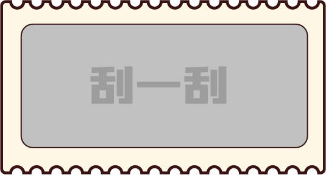

• 刮奖区 •


活动介绍
主办单位
首钢·贵州之光
活动时间：
3月2日09：00–3月8日23：00
领奖时间：
3月9日10：00–4月9日18：00
活动规则：
1.用户每日有两次刮奖机会，每日分享至朋友圈或好友可额外获赠1次刮奖机会；
2.同一用户使用多个账户刮奖，奖品不可累计。
活动奖品：
一等奖：年货大礼包
二等奖：年货小礼包
三等奖：暖风机
温暖奖：锅具
生活奖：暖手宝
科技奖：手机壳、手机支架
活动说明：
1.用户关注首钢·贵州之光，即可从菜单进入游戏界面；
参与奖品可累计；
3.中奖用户须在首钢·贵州之光营销中心出示中奖微信号，以及实名登记之后，方可领取个人礼品；
4.中奖用户如在规定领奖时间内未领取奖品，则视为用户主动放弃；
5.活动最终解释权归首钢·贵州之光所有。
6．中奖图片仅为示意图，实际奖品以实际发放奖品为准；
暂无中奖记录
| 编号 | 奖品名称 | 奖品描述 | 中奖时间 |
|---|